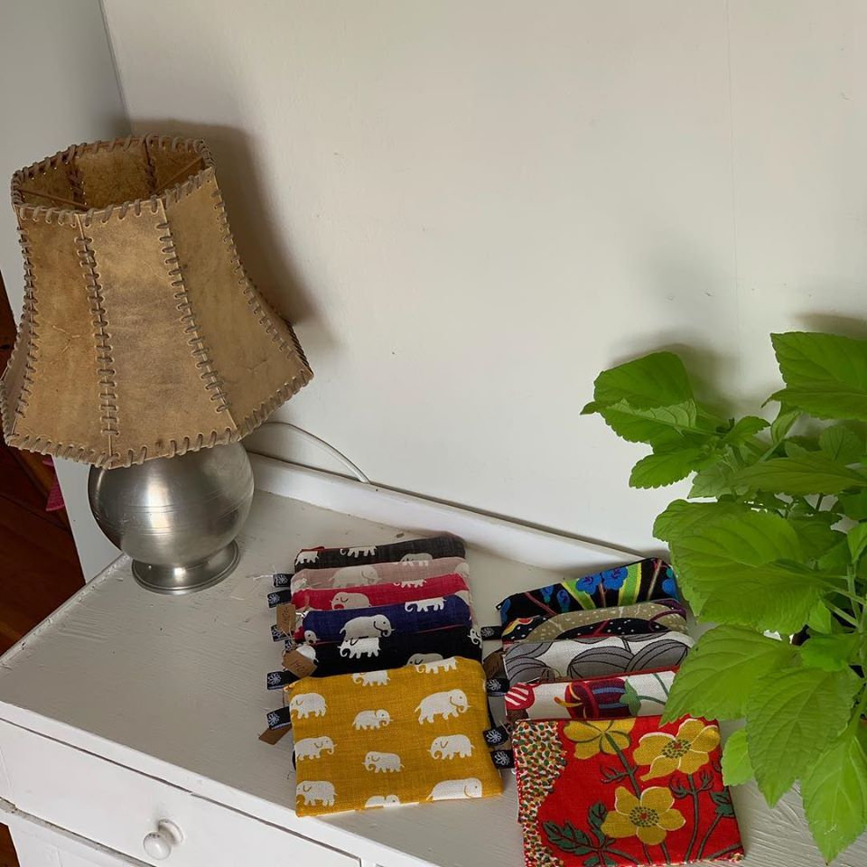
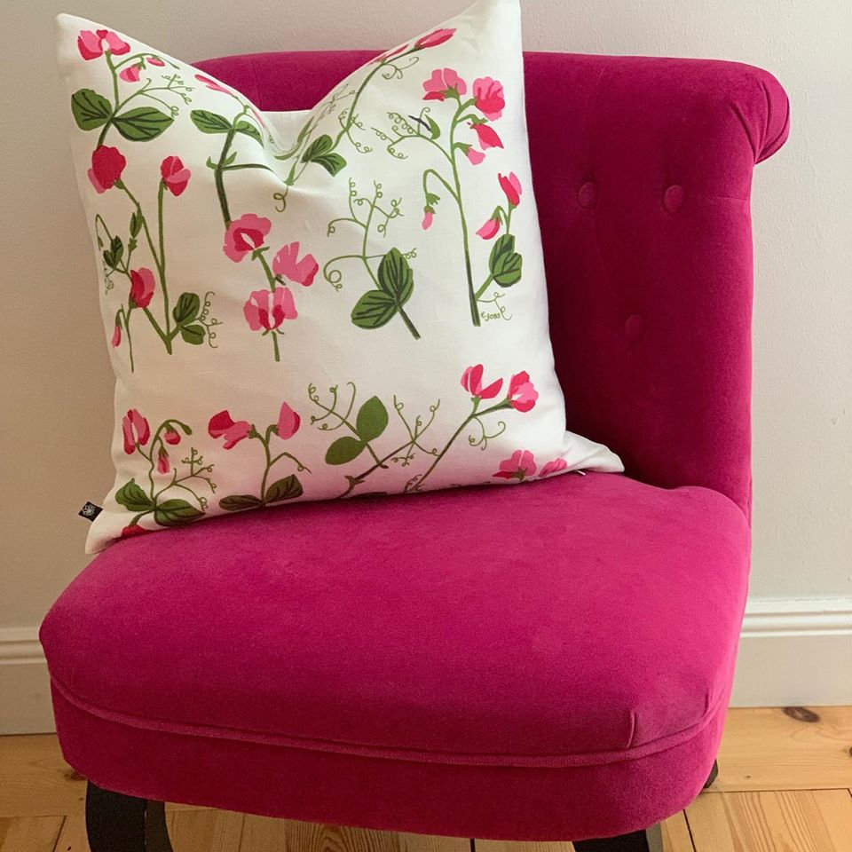
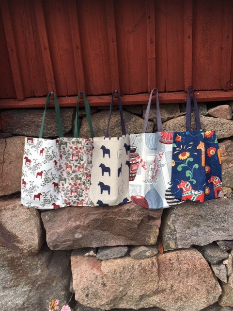
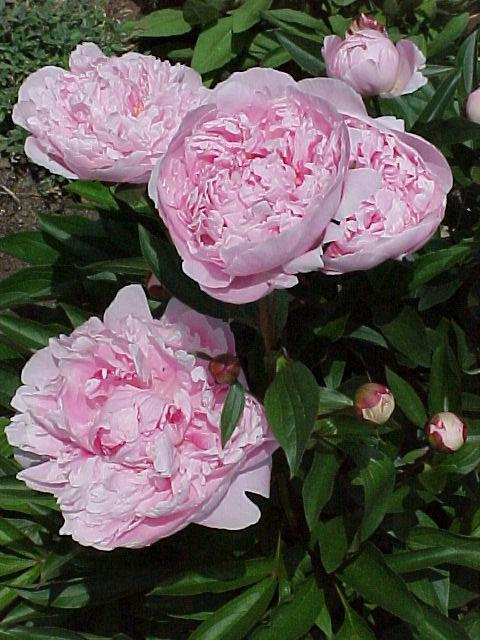

Mönster att
leva med.
En väska att ta med. En kudde att komma hem till. Färgstarka textilier, sydda av Christina i Lindesberg.
Hitta din favoritMöt händerna bakom Pion
Mycket personlighet.

Hitta ditt mönster.
Från den lilla börsen till hemmets favoritkudde.
Alla 15 kategorier samlade här.
Välj något du tycker om, så hjälper Christina dig vidare.
Hela sortimentet
Inga träffar just nu.
Prova ett annat mönster, en produkt eller visa hela sortimentet.
Priser och utföranden från Pions sortiment. Christina bekräftar aktuellt pris, tillgänglighet och frakt när du tar kontakt. Vissa bilder visar flera produkter eller olika varianter.
Lite mer färg.
Varje dag.
Klassiska mönster får nytt liv som väskor, börsar och detaljer för hemmet. Bland tygerna finns favoriter från Svenskt Tenn, Josef Frank, Estrid Ericson, Stig Lindberg och Jobs.
Hitta en väska att tycka om

Det är Christina
som syr.
Bakom Pion Design finns Christina Bertholdson — och en kärlek till färg, form och fina tyger.
Christina syr själv produkterna i sortimentet. Här möts välkända mönster och personlig syglädje, i saker som får följa med genom vardagen.
Har du sett ett tyg du tycker om, eller behöver du ett annat mått? Produkterna kan också sys på beställning. Ta kontakt och berätta vad du har i tankarna.
Skriv till ChristinaDirekt från
hennes händer till dig.
Du beställer personligen av Christina.
Enkelt, med utrymme för dina önskemål.
Hitta något du gillar
Utforska sortimentet och lägg dina favoriter i en förfrågan. Du kan också ringa eller mejla direkt.
Prata med Christina
Stäm av mönster, mått, pris och tillgänglighet. Frakten beräknas enligt Postens portotabell.
Bekräfta din beställning
När ni kommit överens betalar du med Swish till 070-540 84 49, enligt Christinas instruktioner.
Vad vill du
ha mer färg på?
En fråga, en idé eller något du vill beställa.
Christina hjälper dig gärna.